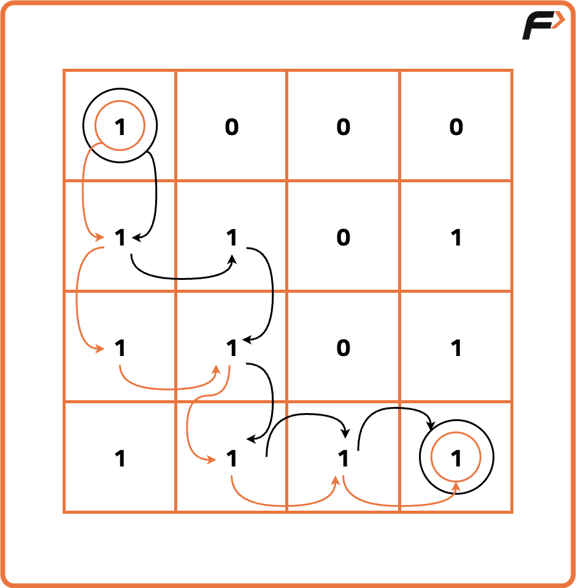
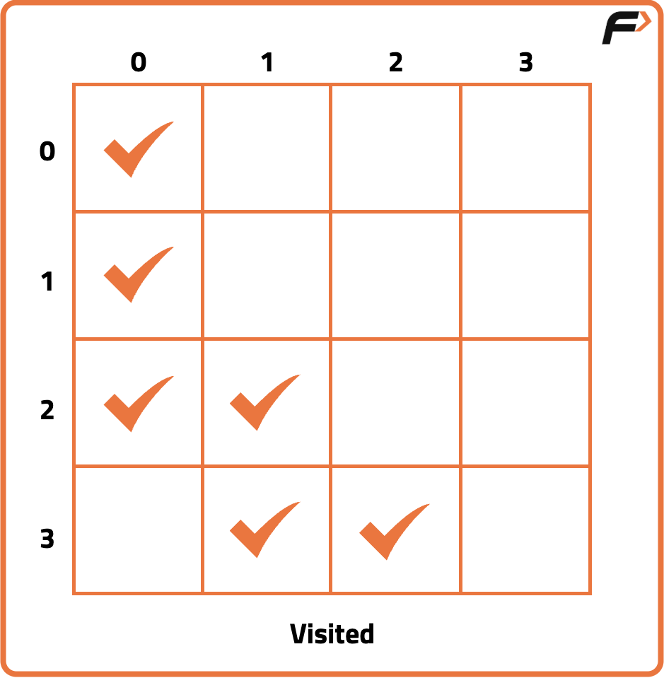
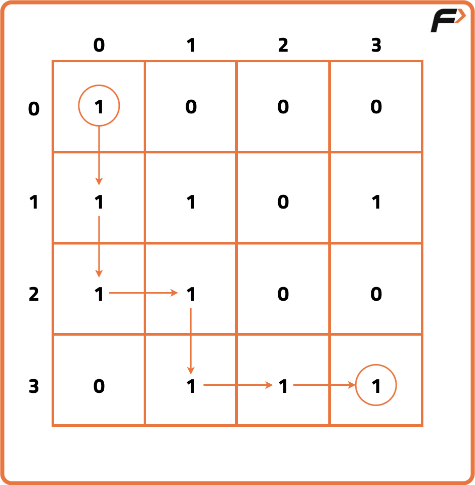
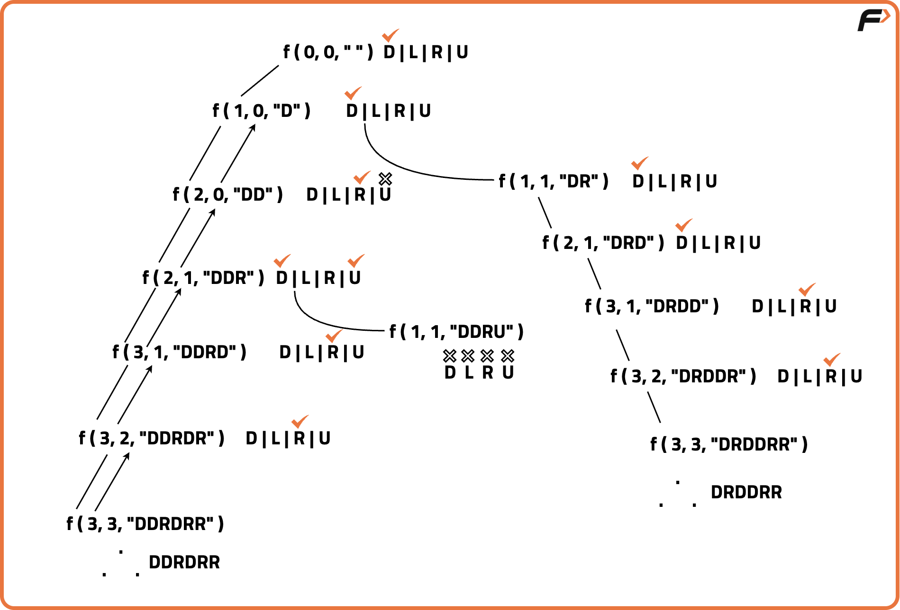

Rat in a Maze
Problem Statement: Given a grid of dimensions n x n. A rat is placed at coordinates (0, 0) and wants to reach at coordinates (n-1, n-1). Find all possible paths that rat can take to travel from (0, 0) to (n-1, n-1). The directions in which rat can move are 'U' (up) , 'D' (down) , 'L' (left) , 'R' (right).
The value 0 in grid denotes that the cell is blocked and rat cannot use that cell for travelling, whereas value 1 represents that rat can travel through the cell. If the cell (0, 0) has 0 value, then mouse cannot move to any other cell.
Examples
Input: n = 4 , grid = [ [1, 0, 0, 0] , [1, 1, 0, 1], [1, 1, 0, 0], [0, 1, 1, 1] ] Output: ["DDRDRR" , "DRDDRR"] Explanation: The rat has two different path to reach (3, 3). The first path is (0, 0) => (1, 0) => (2, 0) => (2, 1) => (3, 1) => (3, 2) => (3, 3). The second path is (0,0) => (1,0) => (1,1) => (2,1) => (3,1) => (3,2) => (3,3).
Input: n = 2 , grid = [[1, 0] , [1, 0]] Output: [] Explanation: There is no path that rat can choose to travel from (0,0) to (1,1).
Disclaimer: Here is the practice link to help you assess your knowledge better. It's highly recommend trying to solve it before looking at the solution.
Approach
Algorithm
- Start at the source(0,0) with an empty string and try every possible path i.e upwards(U), downwards(D), leftwards(L) and rightwards(R).
- As the answer should be in lexicographical order so it's better to try the directions in lexicographical order i.e (D,L,R,U)
- Declare a 2D-array named visited because the question states that a single cell should be included only once in the path,so it's important to keep track of the visited cells in a particular path.
- If a cell is in path, mark it in the visited array. Also keep a check of the “out of bound” conditions while going in a particular direction in the matrix.
- Whenever we reach the destination(n,n), store the path in your answer and backtrack to find more available paths.
- While getting back, keep on unmarking the visited array for the respective direction. Also check whether there is a different path possible while getting back and if yes, then mark that cell in the visited array.



Code
#include <bits/stdc++.h>
using namespace std;
// Class to solve the Rat in a Maze problem
class Solution {
public:
// Function to check if the cell is within maze and valid to move
bool isSafe(int x, int y, int n, vector<vector<int>> &maze,
vector<vector<int>> &visited) {
return (x >= 0 && x < n && y >= 0 && y < n &&
maze[x][y] == 1 && visited[x][y] == 0);
}
// Function to solve maze using backtracking
void solve(int x, int y, int n, vector<vector<int>> &maze,
vector<vector<int>> &visited, string path,
vector<string> &res) {
// If destination reached, store the path
if (x == n - 1 && y == n - 1) {
res.push_back(path);
return;
}
// Mark the cell visited
visited[x][y] = 1;
// Try moving Down
if (isSafe(x + 1, y, n, maze, visited)) {
solve(x + 1, y, n, maze, visited, path + "D", res);
}
// Try moving Left
if (isSafe(x, y - 1, n, maze, visited)) {
solve(x, y - 1, n, maze, visited, path + "L", res);
}
// Try moving Right
if (isSafe(x, y + 1, n, maze, visited)) {
solve(x, y + 1, n, maze, visited, path + "R", res);
}
// Try moving Up
if (isSafe(x - 1, y, n, maze, visited)) {
solve(x - 1, y, n, maze, visited, path + "U", res);
}
// Backtrack: unmark cell as visited
visited[x][y] = 0;
}
// Main function to find all paths
vector<string> findPath(vector<vector<int>> &maze, int n) {
vector<string> res;
vector<vector<int>> visited(n, vector<int>(n, 0));
if (maze[0][0] == 1) {
solve(0, 0, n, maze, visited, "", res);
}
return res;
}
};
// Driver code
int main() {
vector<vector<int>> maze = {
{1, 0, 0, 0},
{1, 1, 0, 1},
{1, 1, 0, 0},
{0, 1, 1, 1}
};
int n = maze.size();
Solution obj;
vector<string> paths = obj.findPath(maze, n);
for (auto &p : paths) cout << p << " ";
}
Complexity Analysis
Time Complexity: O(4^(N*N)),, because on every cell we need to try 4 different directions.Space Complexity: O(N*N), additional space for visited array and maximum Depth of the recursion tree(auxiliary space).